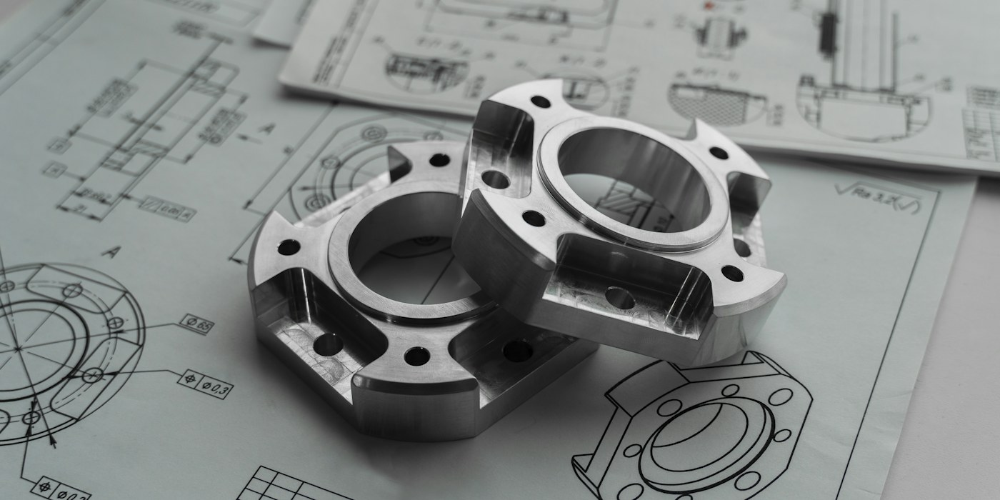
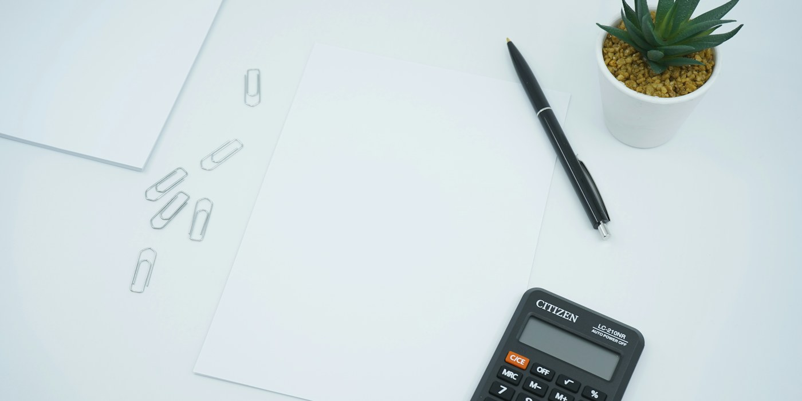

표준특허 수익화
SEP 창출과 선언부터 라이선싱 협상까지, 기술을 로열티 수익 흐름으로 설계합니다. 표준화 대응과 특허 매핑을 연결해 현금화 경로를 만듭니다.
SEPLicensing표준화 대응
IP 실무 경력
창출·관리한 IP 자산
특허청장상 수상
산업은 달라도 문제는 같습니다. 흩어진 아이디어를 권리로 만들고, 그 권리를 지키고, 수익으로 바꾸는 일입니다.

SEP 창출과 선언부터 라이선싱 협상까지, 기술을 로열티 수익 흐름으로 설계합니다. 표준화 대응과 특허 매핑을 연결해 현금화 경로를 만듭니다.

매출과 수불부, 로열티 리포팅을 교차 검증해 과소보고와 정산 누수를 찾아냅니다. 계약 조건과 실제 정산 사이의 간극을 데이터로 증명합니다.
국내외 침해와 병행수입, 위조품 대응 및 소송 전략 수립.
기술과 특허의 사업적 가치를 정량화해 의사결정 근거를 만듭니다.
2,200건 이상을 다룬 경험을 바탕으로 한 전략적 포트폴리오 설계.
사내 발명 활성화를 위한 보상·관리 체계의 설계와 정비.
11년간 손으로 해온 IP 실무에서 병목을 찾아 설계하고 구현합니다. 도메인을 아는 사람이 직접 만들 때만 나오는 결과가 있습니다. 회사 업무와는 분리된 개인 프로젝트입니다.
자동화의 마지막 단계는 사람입니다. 발송과 제출은 2단계 게이트를 거치게 해 자동 실행 사고를 구조로 막습니다.
틀리면 안 되는 판단은 규칙 엔진이, 설명과 문답은 AI가 맡습니다. 환각이 들어올 자리를 아예 없앱니다.
사내 데이터는 읽기만 하고 차이 리포트만 냅니다. 회사 데이터를 코드에 들이지 않는 경계를 먼저 설계합니다.
표준특허 창출, 라이선스 감사, 내부 감사 프로세스 담당.
병행수입과 위조품 약 200건 동시 대응 및 관리.
IP 자산 2,200건 이상 관리. 중국 디자인 침해소송 승소.
특허 명세서 작성. 대기업 특허 담당.
직무발명우수사례 공모전 한국발명진흥회장상
표준특허창출지원사업 우수기업 지식재산처장상
ICT 특허경영대상 장관상
기업지식재산명장 특허청장상
지식재산경영기업 특허청장상
수상 소식부터 커리어 인터뷰까지, IP 실무자의 관점이 여러 산업·경제 매체를 통해 소개되어 왔습니다.
라이선스 감사, 표준특허 수익화, 분쟁 대응 모두 좋습니다. 어떤 판단이 필요한지만 적어 주시면 됩니다.
보통 영업일 기준 하루 안에 답장합니다.
내용 확인하고 회신드리겠습니다. 급하시면 위 메일로 바로 연락 주세요.